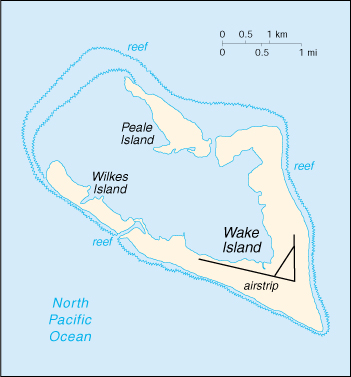

![[Country Flag of Wake Island]](../flags/wq-lgflag.jpg)
| Wake Island |
|
        |  | |
| Geography |
Location: Oceania, atoll in the North Pacific Ocean, about two-thirds of the way from Hawaii to the Northern Mariana Islands
Geographic coordinates: 19 17 N, 166 36 E
Map references: Oceania
Area:
total:
6.5 sq km
land:
6.5 sq km
water:
0 sq km
Area - comparative: about 11 times the size of The Mall in Washington, DC
Land boundaries: 0 km
Coastline: 19.3 km
Maritime claims:
exclusive economic zone:
200 nm
territorial sea:
12 nm
Climate: tropical
Terrain: atoll of three coral islands built up on an underwater volcano; central lagoon is former crater, islands are part of the rim
Elevation extremes:
lowest point:
Pacific Ocean 0 m
highest point:
unnamed location 6 m
Natural resources: none
Land use:
arable land:
0%
permanent crops:
0%
permanent pastures:
0%
forests and woodland:
0%
other:
100%
Irrigated land: 0 sq km (1998)
Natural hazards: occasional typhoons
Environment - current issues: NA
Geography - note: strategic location in the North Pacific Ocean; emergency landing location for transpacific flights
| People |
Population:
no indigenous inhabitants
note:
US military personnel have left the island, but some civilian personnel remain (July 2000 est.)
| Government |
Country name:
conventional long form:
none
conventional short form:
Wake Island
Data code: WQ
Dependency status: unincorporated territory of the US; administered from Washington, DC by the Department of the Interior; occasional activities on the island are managed by the US Army under a US Air Force contract
Flag description: the flag of the US is used
| Economy |
Economy - overview: Economic activity is limited to providing services to contractors located on the island. All food and manufactured goods must be imported.
Electricity - production: NA kWh
| Communications |
Telephone system:
satellite communications; 1 DSN circuit off the Overseas Telephone System (OTS)
domestic:
NA
international:
NA
Radio broadcast stations:
AM 0, FM NA, shortwave NA
note:
Armed Forces Radio/Television Service (AFRTS) radio service provided by satellite (1998)
Television broadcast stations: 0 (1997)
| Transportation |
Ports and harbors: none; two offshore anchorages for large ships
Airports: 1 (1999 est.)
Airports - with paved runways:
total:
1
2,438 to 3,047 m:
1 (1999 est.)
Transportation - note: formerly an important commercial aviation base, now occasionally used by US military, some commercial cargo planes, and for emergency landings
| Military |
Military - note: defense is the responsibility of the US
| Transnational Issues |
Disputes - international: claimed by Marshall Islands